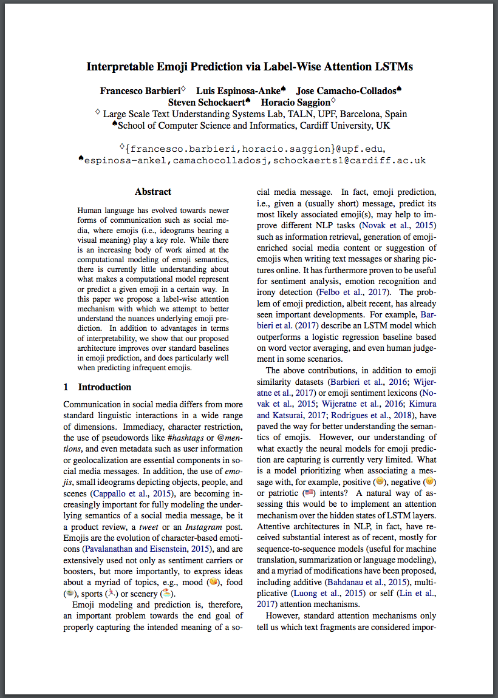

Interpretable Emoji Prediction via Label-Wise Attention LSTMs

Link to Paper 
This link includes 300 random examples from our corpus, along with gold label (G:) and 15 predictions (P:) of the single attention network. Each word of each tweet is highlighted with the weights alpha.
This link includes the same set of tweets, with the emojis from the gold standard (G:) and the predictions (P:) of the label-wise attention network. Moreover, by clicking on the emojis on the top, or on the predictions, it is possible to show the attention weights alpha_l of each label. Note that the words highlighted correspond the emoji displayed on the top left ("Selected")
In both files, the words in red font are out of vocabolary words.